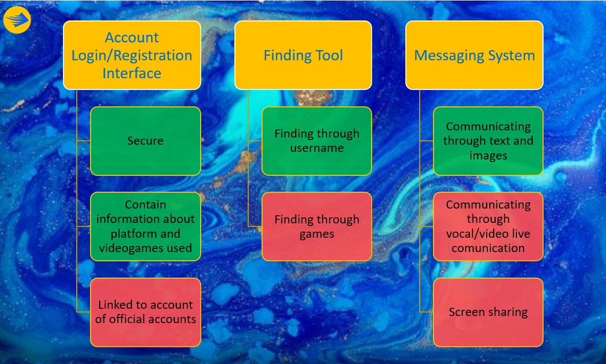

Project | Scope & Limits
Assignment Credit: Alex Vorraro
Scope & limits
Crew Us is an app designed mainly for the preparation phase of Gaming sessions, but what does this mean and how far does the project arrive?
Crew Us is the tool which puts players in touch with each other so that they can organize their gaming sessions and play together. Since it is not designed for communication during the gaming session, there will be no calling and video-calling functions and no video-sharing function. The user will be able to communicate in a private chat room or in a “Crew” room, where more than 2 players can be located. Players will be able to communicate by text and images.
Throughout the years it has also been common for Gamers to have a dedicated space online where it is possible to ask questions or speak with the others, like forums. This however, is not planned for our app, at least for now. To communicate with others, the gamers will need to use one of the two functions mentioned before.
An interesting aspect is the inviting system. Despite the fact that we would like to utilise official invites, so that if a gamer gets invited through the official platforms, it also pops-up in our app, this seems unlikely. As time passes, we will try to add a similar function, that even if it doesn’t work connected to the official platform, at least will create an invite through Crew Us that visually makes the gamer understand if someone wants to play with them and at what game.
Scope and limits are important to set so that we can see clearly our projects. It helps out to understand what is needed and what isn’t, the time we need to dedicate to the project and the costs. Beginning with a clear idea results in improved quality of the final product created, impacting even the users in a good way. With scope and limits we don’t only refer to features that will not be included, but also a vision of the product in the future and features that could fit it and be implemented as time passes. In our case, as mentioned before we are not developing public spaces like forums, but this cannot be totally excluded for future plans.
Below we have complied a chart that lays out some what limitations of scope we are applying to our aims as layed out in the aims section

Scope & Limits Chart, Green = Identified Aim, Red = Out of Scope Limitation Created by Alex